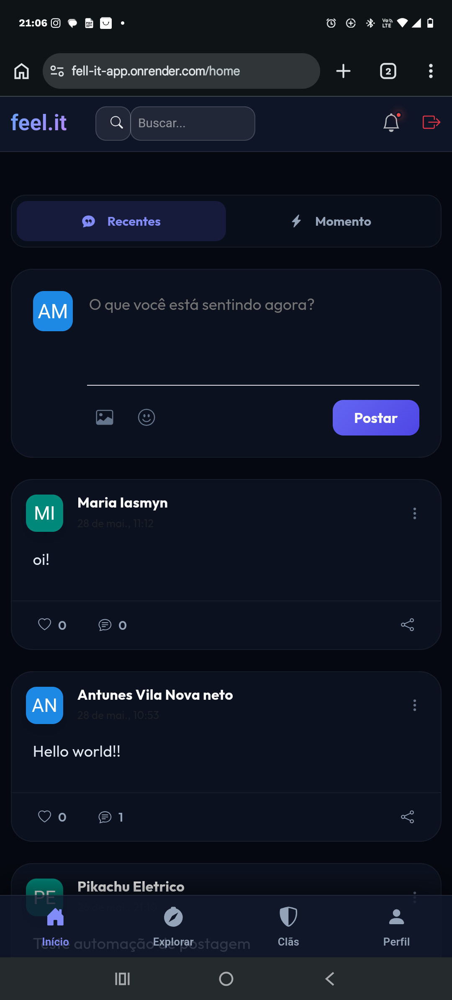
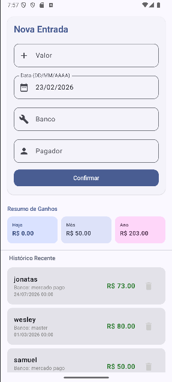
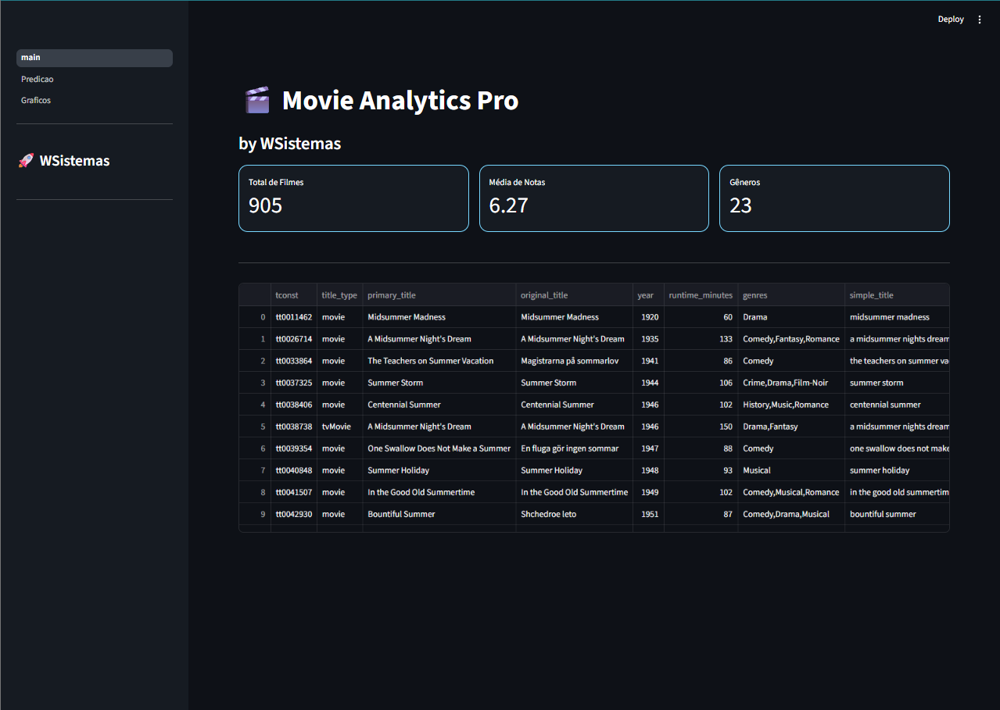

APRESENTAÇÃO
Desenvolvedor Full Stack Júnior e estudante de Ciência da Computação, com experiência em desenvolvimento de aplicações Web e Mobile, análise de sistemas, modelagem de dados e suporte técnico. Atuo no desenvolvimento de soluções digitais personalizadas, com experiência em PHP, Laravel, JavaScript, Vue.js, Kotlin, Java, MySQL e APIs REST, além de práticas de desenvolvimento orientadas à organização, usabilidade e responsividade.
Possuo experiência profissional também em suporte técnico, atendimento ao usuário, diagnóstico de problemas e monitoramento de redes, o que contribuiu para desenvolver uma visão prática sobre tecnologia e sobre as necessidades dos usuários e das empresas. Como desenvolvedor autônomo, atuo na criação e evolução de sistemas administrativos, desde a análise e modelagem da solução até o desenvolvimento, manutenção e suporte.
Busco aplicar meus conhecimentos técnicos e minha experiência prática na criação de soluções eficientes, funcionais e alinhadas às necessidades do negócio, contribuindo para o desenvolvimento de produtos e processos cada vez mais eficientes.
SOLUÇÕES DIGITAIS PARA O SEU NEGÓCIO
Sua empresa ainda depende de planilhas, processos manuais ou sistemas que não atendem completamente às suas necessidades?
Desenvolvo soluções digitais personalizadas para empresas, com foco em organização, automação e eficiência. O objetivo é transformar as necessidades do seu negócio em sistemas simples de utilizar, seguros e adaptados à sua realidade.
💻 Sistemas ERP e Sistemas Administrativos
Desenvolvimento de sistemas personalizados para gerenciamento e automação de processos empresariais, permitindo centralizar informações e facilitar a rotina da sua equipe.
Possibilidade de desenvolver soluções para:
- Gestão de clientes e funcionários;
- Controle financeiro e fluxo de caixa;
- Controle de estoque e produtos;
- Ordens de serviço;
- Agendamentos e reservas;
- Relatórios e dashboards;
- Controle de usuários e permissões;
- Processos internos personalizados;
- Integração com APIs e outros serviços.
Cada sistema é desenvolvido de acordo com as necessidades da empresa, evitando recursos desnecessários e priorizando aquilo que realmente facilita o trabalho.
🌐 Desenvolvimento de Sites e Sistemas Web
Criação de sites institucionais, sistemas web e plataformas administrativas responsivas, desenvolvidos para funcionar em computadores, tablets e celulares.
O projeto pode incluir:
- Site institucional;
- Página comercial;
- Sistemas de gerenciamento;
- Painéis administrativos;
- Áreas restritas para usuários;
- Formulários e integrações;
- Interfaces modernas e responsivas;
- Integração com bancos de dados e APIs.
🗄️ Bancos de Dados
Estruturação e organização de bancos de dados relacionais, garantindo que as informações da empresa sejam armazenadas de forma organizada e eficiente.
Os serviços podem envolver:
- Modelagem de dados;
- Criação e estruturação de bancos de dados;
- Relacionamento entre informações;
- Otimização de consultas;
- Organização de dados existentes;
- Integração entre sistemas e bancos de dados;
- Desenvolvimento de soluções utilizando MySQL e SQL.
⚙️ Desenvolvimento Personalizado
Cada empresa possui processos diferentes. Por isso, o desenvolvimento pode ser planejado desde a análise da necessidade até a implementação da solução.
Atuo com tecnologias como PHP, Laravel, JavaScript, Vue.js, Kotlin, Java, Python, MySQL, APIs REST e Bootstrap, utilizando ferramentas e padrões modernos de desenvolvimento.
Além do desenvolvimento, também ofereço suporte e manutenção, auxiliando na identificação de problemas, correção de erros e evolução das soluções conforme o negócio cresce.
MINHAS REDES SOCIAIS & CONTATO
Conecte-se comigo através das redes abaixo:
TELHADO FELINO (GAME RUNNER)
Projeto Canvas em JavaScript Puro rodando em tempo real no seu navegador!
PROJETOS & ESTUDOS DE CASO
Clique em qualquer projeto para abrir o modal com o vídeo/galeria de fotos e a documentação completa!
WS-Hotelaria
ERP funcional em produção há quase 1 ano para gestão hoteleira, desenvolvido sob medida para a pousada familiar com mais de 200 cadastros ativos.

Imagem do Projetofeel.it
Rede social fullstack focada em expressão emocional com SPA Vue 3, Node.js, TypeScript e Prisma.

Galeria de FotosPayGuardian
Sistema de gestão financeira pessoal nativo em Kotlin e Android Studio com monitorização de capital.

Galeria de FotosMovie Analytics Pro
Evolução de projeto acadêmico para Data Science e Machine Learning em Python, Pandas, KNN e Árvore de Decisão.
 Galeria de Fotos
Galeria de Fotos
Projeto Memorize
Aplicação desktop Windows em Java SE e Swing para memorização com flashcards e Orientação a Objetos.
COMPETÊNCIAS TÉCNICAS
Linguagens e Tecnologias
Frameworks
Ferramentas e Padrões
Áreas de Especialidade
Análise de Sistemas, Arquitetura de aplicações Mobile e Web, Modelagem de dados, Experiência do usuário.
Suporte e Atendimento
Suporte Técnico (N1/N2), Gestão de Chamados (Ticketing), Diagnóstico de Problemas de Rede, Atendimento Presencial ao Usuário.
EXPERIÊNCIA PROFISSIONAL
Desenvolvedor Júnior Autônomo (Freelancer | Projetos Próprios)
João Pessoa, Paraíba, Brasil | Fevereiro de 2023 – Atual
- Criação de soluções digitais completas com foco em sistemas administrativos, modelagem de dados e interfaces responsivas.
- Responsável pela modelagem de dados, estruturação de banco de dados e análise de sistemas em projetos próprios.
- Suporte técnico contínuo a clientes, garantindo a usabilidade das soluções desenvolvidas e resolução de dúvidas e erros.
Estagiário em operações | Tely
João Pessoa, Paraíba, Brasil | Fevereiro de 2025 – Janeiro de 2026 (1 ano)
- Atuação na central de operações com foco em análise e monitoramento de redes.
- Prestação de atendimento e suporte técnico, auxiliando na identificação e resolução de problemas de conectividade.
- Apoio em processos internos para garantir a estabilidade dos serviços.
Analista de Sistemas e Suporte Técnico | Hotel da Serra
Teixeira, Paraíba, Brasil | Fevereiro de 2021 – Novembro de 2022 (1 ano e 10 meses)
- Desenvolvimento e manutenção de programa ERP próprio; Suporte técnico presencial e remoto a funcionários e clientes.
- Diagnóstico e resolução de incidentes sistêmicos; Registro e acompanhamento de ocorrências.
FORMAÇÃO ACADÊMICA E CERTIFICAÇÕES
FPB: FACULDADE INTERNACIONAL DA PARAÍBA
Bacharelado, CIÊNCIA DA COMPUTAÇÃO
Fevereiro de 2023 – Dezembro de 2026
Certificações e Cursos Complementares
- Desenvolvimento Web Compacto e Completo (Udemy Cursos Online)
- Java Completo - Programação Orientada a Objetos + Projetos (Nélio Alves) (Udemy Cursos Online)
- Banco de Dados e SQL (Felipe Mafra) (Udemy Cursos Online)
- Arquitetura de Redes (Gabriel Torres) (Udemy Cursos Online)